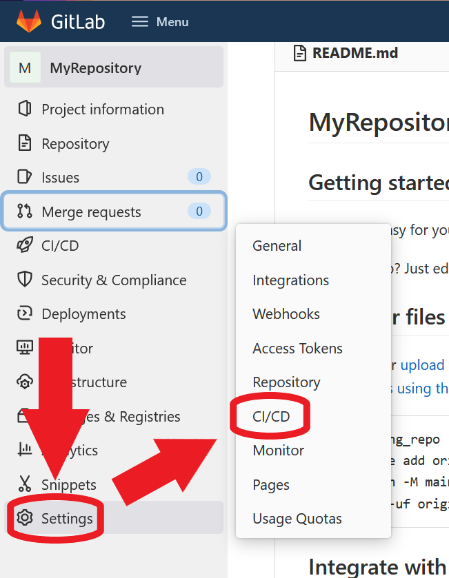
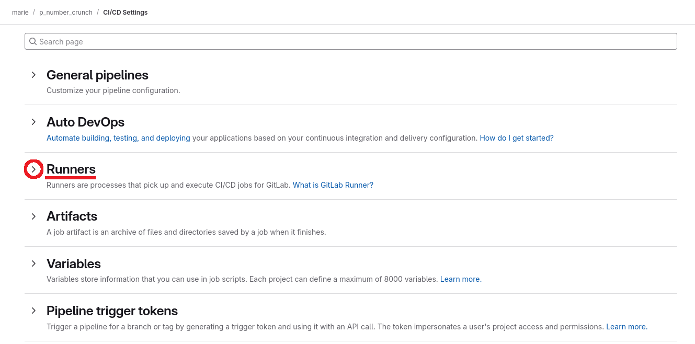
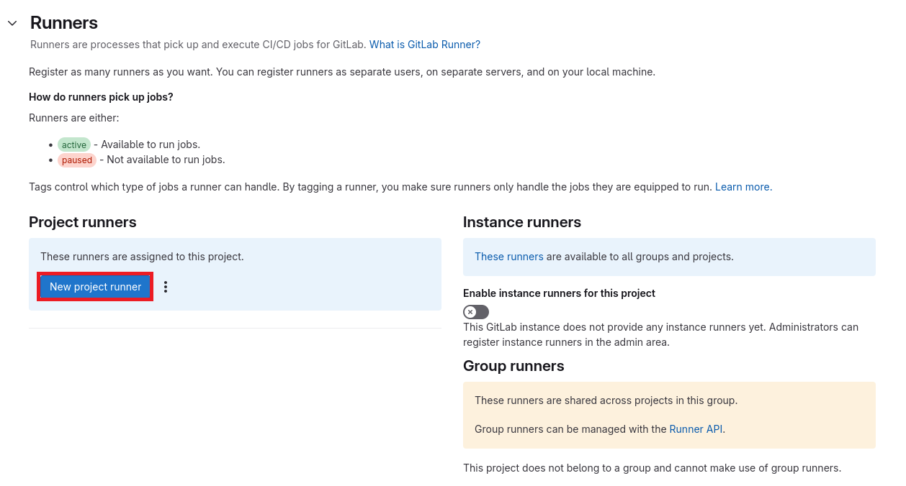
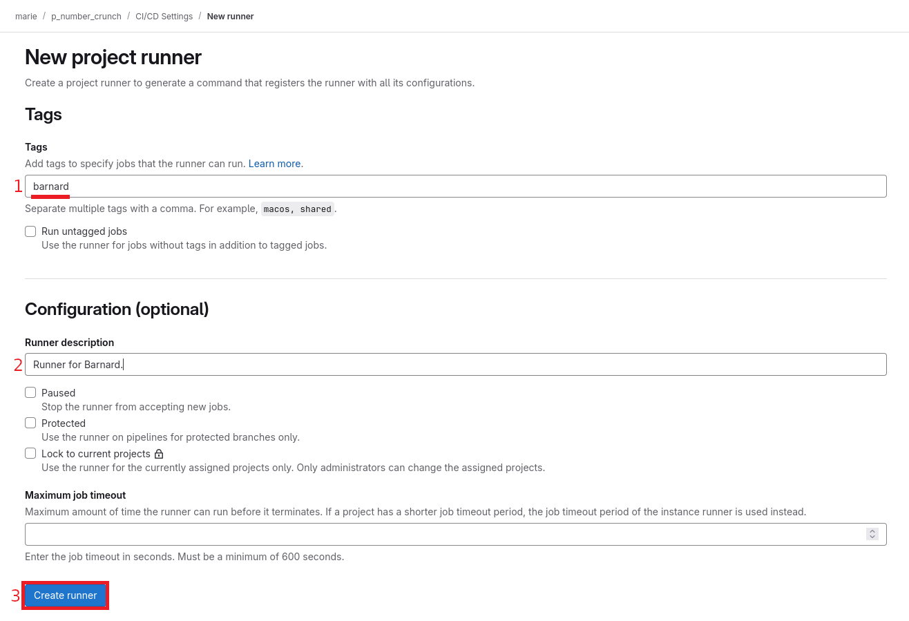
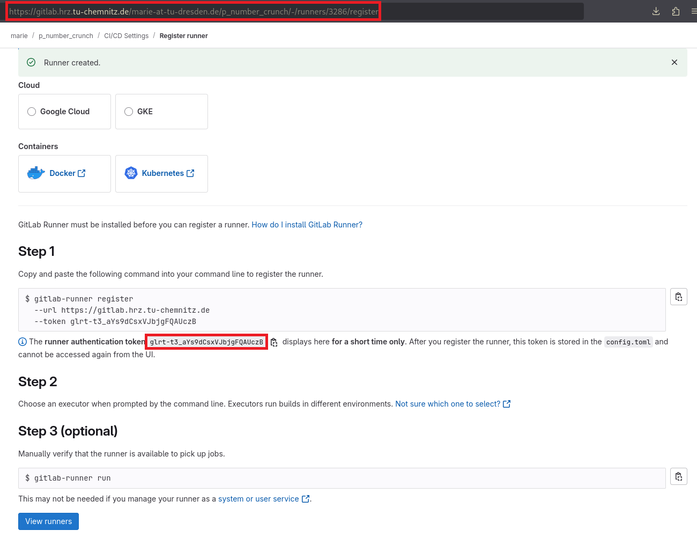
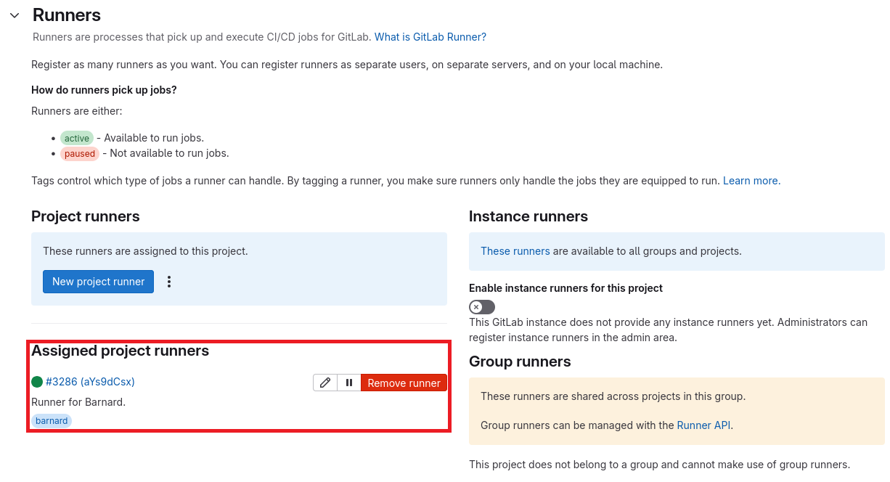

CI/CD on HPC#
We provide a GitLab Runner that allows you to run a GitLab pipeline on the ZIH systems. With that you can continuously build, test, and benchmark your HPC software in the target environment.
Requirements#
You (and ideally every involved developer) need an HPC-Login.
You manage your source code in a repository at the TU Chemnitz GitLab instance
Setup Process#
Open your repository in the browser.
Hover Settings and then click on CI/CD

{ align=center }Expand the Runners section

{ align=center }Click on New project runner

{ align=center }Configure your runner, make sure to include the correct cluster name

{ align=center }Copy the repository URL and the authentication token

{ align=center }Now, you can request the registration of your repository with a corresponding ticket to the HPC support. In the ticket, you need to add the URL of the GitLab repository, the authentication token and the cluster of interest.
Once your runner has been added, it will appear in the Runners section

{ align=center }
GitLab Pipelines#
As the ZIH provides the CI/CD as an GitLab runner, you can run any pipeline already working on other
runners with the CI/CD at the ZIH systems. This also means, to configure the actual steps performed
once your pipeline runs, you need to define the .gitlab-ci.yml file in the root of your
repository. There is a comprehensive
documentation and a reference for the
.gitlab-ci.yml file available at every
GitLab instance. There’s also a quick start
guide.
The main difference to other GitLab runner is that every pipeline jobs will be scheduled as an individual HPC job on the ZIH systems. Therefore, an important aspect is the possibility to set Slurm parameters. While scheduling jobs allows to run code directly on the target system, it also means that a single pipeline has to wait for resource allocation. Hence, you want to restrict, which commits will run the complete pipeline, or which commits only run a part of the pipeline.
Passing Slurm Parameters#
You can pass Slurm parameters via the variables
keyword, either globally for the
whole yaml file, or on a per-job base.
Use the variable SCHEDULER_PARAMETERS and define the same parameters you would use for srun or
sbatch.
!!! warning
The parameters `--job-name`, `--output`, and `--wait` are handled by the GitLab runner and must
not be used. If used, the run will fail.
!!! tip
Make sure to set the `--account` such that the allocation of HPC resources is accounted
correctly.
!!! example
The following YAML file defines a configuration section `.test-job`, and two jobs,
`test-job-alpha` and `test-job-barnard`, extending from that. The two job share the
`before_script`, `script`, and `after_script` configuration, but differ in the
`tags` and `SCHEDULER_PARAMETERS`. The `test-job-alpha` and `test-job-barnard` are
scheduled on the partition `alpha` and partition `barnard`, respectively.
```yaml
.test-job:
before_script:
- date
- pwd
- hostname
script:
- date
- pwd
- hostname
after_script:
- date
- pwd
- hostname
id_tokens:
SITE_ID_TOKEN:
aud: https://gitlab.hrz.tu-chemnitz.de
test-job-alpha:
extends: .test-job
variables:
SCHEDULER_PARAMETERS: -p alpha
tags:
- alpha
test-job-barnard:
extends: .test-job
variables:
SCHEDULER_PARAMETERS: -p barnard
tags:
- barnard
```
Current Limitations#
Every runner job is currently limited to one hour. Once this time limit passes, the runner job gets canceled regardless of the requested runtime from Slurm. This time includes the waiting time for HPC resources.
Pitfalls and Recommendations#
While the
before_scriptandscriptarray of commands are executed on the allocated resources, theafter_scriptruns on the GitLab runner node. We recommend that you do not useafter_script.It is likely that all your runner jobs will be executed in a slightly different directory on the shared filesystem. Some build systems, for example CMake, expect that the configure and build is executed in the same directory. In this case, we recommend to use one job for configure and build.